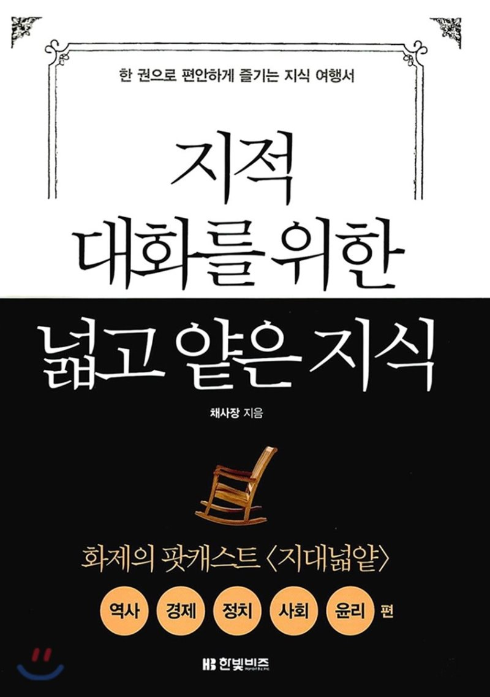

: 지대넓얕1어렵고 딱딱하던 인문학 분야 판도를 뒤바꾼 책. 출간 즉시 베스트셀러에 오르는 것을 시작으로, 200만 부 누적 판매를 돌파해 더블 밀리언셀러를 기록하며, 장장 5년간 스테디셀러의 자리에서 꿈쩍도 하지 않은 책. 발음하기도 낯설고 어려운 ‘지대넓얕’이라는 말을 유행시키고, 유사 콘셉트의 TV 프로그램까지 탄생시킨 책, 기초 상식에 목말라 있던 보통 사람들이 거리낌 없이 토론하게 하고 뉴스를 주체적으로 보게 하고 선거에서 주관을 갖게 한 책, 80대 독자가 독학을 시작하고 중학생 독자가 인문학을 읽게 하고 직장인들이 독서 모임을 갖게 하는 등 세대 불문 남녀노소 읽을 수 있도록 쉽고 재미있게 쓰였다고 평가받는 책. 이 모든 것이 『지적 대화를 위한 넓고 얕은 지식』에 대한 설명이다.
